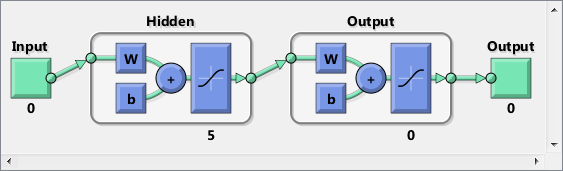
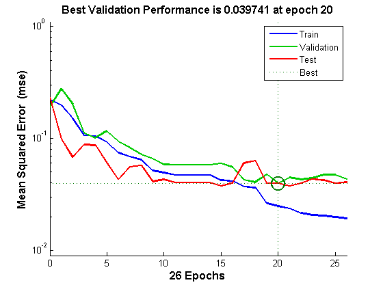
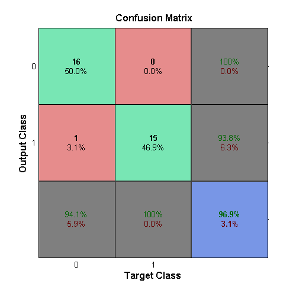
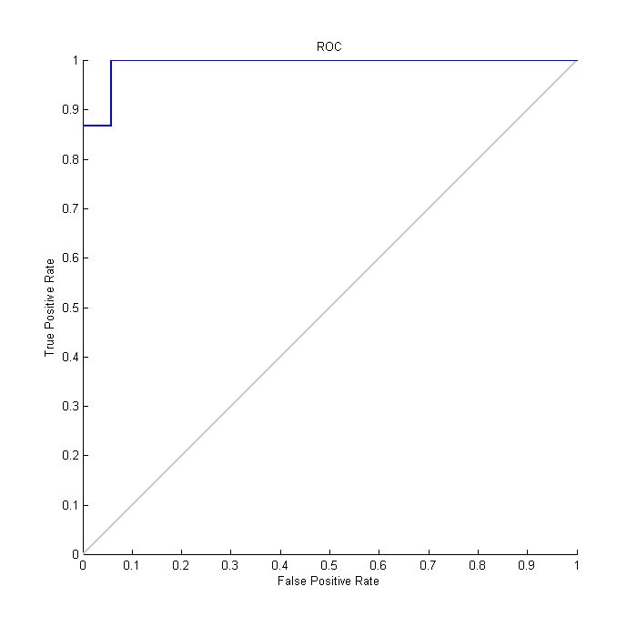

Cancer Detection
This example demonstrates using a neural network to detect cancer from mass spectrometry data on protien profiles.
Contents
Introduction
Serum proteomic pattern diagnostics can be used to differentiate samples from patients with and without disease. Profile patterns are generated using surface-enhanced laser desorption and ionization (SELDI) protein mass spectrometry. This technology has the potential to improve clinical diagnostics tests for cancer pathologies.
The Problem: Cancer Detection
The goal is to build a classifier that can distinguish between cancer and control patients from the mass spectrometry data.
The methodology followed in this example is to select a reduced set of measurements or "features" that can be used to distinguish between cancer and control patients using a classifier.
These features will be ion intensity levels at specific mass/charge values.
Formatting the Data
The data in this example is from the FDA-NCI Clinical Proteomics Program Databank: http://home.ccr.cancer.gov/ncifdaproteomics/ppatterns.asp
To recreate the data in ovarian_dataset.mat used in this example, download and uncompress the raw mass-spectrometry data from the FDA-NCI web site. Create the data file OvarianCancerQAQCdataset.mat by either running script msseqprocessing in Bioinformatics Toolbox (TM) or by following the steps in the example biodistcompdemo (Batch processing with parallel computing). The new file contains variables Y, MZ and grp.
Each column in Y represents measurements taken from a patient. There are 216 columns in Y representing 216 patients, out of which 121 are ovarian cancer patients and 95 are normal patients.
Each row in Y represents the ion intensity level at a specific mass-charge value indicated in MZ. There are 15000 mass-charge values in MZ and each row in Y represents the ion-intesity levels of the patients at that particular mass-charge value.
The variable grp holds the index information as to which of these samples represent cancer patients and which ones represent normal patients.
An extensive description of this data set and excellent introduction to this promising technology can be found in [1] and [2].
Ranking Key Features
This is a typical classification problem in which the number of features is much larger than the number of observations, but in which no single feature achieves a correct classification, therefore we need to find a classifier which appropriately learns how to weight multiple features and at the same time produce a generalized mapping which is not over-fitted.
A simple approach for finding significant features is to assume that each M/Z value is independent and compute a two-way t-test. rankfeatures returns an index to the most significant M/Z values, for instance 100 indices ranked by the absolute value of the test statistic.
To finish recreating the data from ovarian_dataset.mat, load the OvarianCancerQAQCdataset.mat and rankfeatures from Bioinformatics Toolbox to choose 100 highest ranked measurements as inputs x.
ind = rankfeatures(Y,grp,'CRITERION','ttest','NUMBER',100); x = Y(ind,:);
Define the targets t as follows:
t = double(strcmp('Cancer',grp));
The preprocessing steps from the script and example listed above are intended to demonstrate a representative set of possible pre-processing and feature selection procedures. Using different steps or parameters may lead to different and possibly improved results of this example.
[x,t] = ovarian_dataset; whos
Name Size Bytes Class Attributes t 1x216 1728 double x 100x216 172800 double
Each column in x represents one of 216 different patients.
Each row in x represents the ion intensity level at one of the 100 specific mass-charge values for each patient.
The variable t is a row of 216 values each of which are either 1, indicating a cancer patient, or 0 for a normal patient.
Classification Using a Feed Forward Neural Network
Now that you have identified some significant features, you can use this information to classify the cancer and normal samples.
Since the neural network is initialized with random initial weights, the results after training the network vary slightly every time the example is run. To avoid this randomness, the random seed is set to reproduce the same results every time. However this is not necessary for your own applications.
setdemorandstream(672880951)
A 1-hidden layer feed forward neural network with 5 hidden layer neurons is created and trained. The input and target samples are automatically divided into training, validation and test sets. The training set is used to teach the network. Training continues as long as the network continues improving on the validation set. The test set provides a completely independent measure of network accuracy.
The input and output have sizes of 0 because the network has not yet been configured to match our input and target data. This will happen when the network is trained.
net = patternnet(5); view(net)
Now the network is ready to be trained. The samples are automatically divided into training, validation and test sets. The training set is used to teach the network. Training continues as long as the network continues improving on the validation set. The test set provides a completely independent measure of network accuracy.
The NN Training Tool shows the network being trained and the algorithms used to train it. It also displays the training state during training and the criteria which stopped training will be highlighted in green.
The buttons at the bottom open useful plots which can be opened during and after training. Links next to the algorithm names and plot buttons open documentation on those subjects.
[net,tr] = train(net,x,t);
To see how the network's performance improved during training, either click the "Performance" button in the training tool, or call PLOTPERFORM.
Performance is measured in terms of mean squared error, and shown in log scale. It rapidly decreased as the network was trained.
Performance is shown for each of the training, validation and test sets. The version of the network that did best on the validation set is was after training.
plotperform(tr)
The trained neural network can now be tested with the testing samples we partitioned from the main dataset. The testing data was not used in training in any way and hence provides an "out-of-sample" dataset to test the network on. This will give us a sense of how well the network will do when tested with data from the real world.
The network outputs will be in the range 0 to 1, so we threshold them to get 1's and 0's indicating cancer or normal patients respectively.
testX = x(:,tr.testInd); testT = t(:,tr.testInd); testY = net(testX); testClasses = testY > 0.5
testClasses =
Columns 1 through 13
1 1 1 1 1 1 1 1 1 1 1 1 1
Columns 14 through 26
1 1 0 0 0 0 1 0 0 0 0 0 0
Columns 27 through 32
0 0 0 0 0 0
One measure of how well the neural network has fit the data is the confusion plot. Here the confusion matrix is plotted across all samples.
The confusion matrix shows the percentages of correct and incorrect classifications. Correct classifications are the green squares on the matrices diagonal. Incorrect classifications form the red squares.
If the network has learned to classify properly, the percentages in the red squares should be very small, indicating few misclassifications.
If this is not the case then further training, or training a network with more hidden neurons, would be advisable.
plotconfusion(testT,testY)
Here are the overall percentages of correct and incorrect classification.
[c,cm] = confusion(testT,testY) fprintf('Percentage Correct Classification : %f%%\n', 100*(1-c)); fprintf('Percentage Incorrect Classification : %f%%\n', 100*c);
c =
0.0313
cm =
16 1
0 15
Percentage Correct Classification : 96.875000%
Percentage Incorrect Classification : 3.125000%
Another measure of how well the neural network has fit data is the receiver operating characteristic plot. This shows how the false positive and true positive rates relate as the thresholding of outputs is varied from 0 to 1.
The farther left and up the line is, the fewer false positives need to be accepted in order to get a high true positive rate. The best classifiers will have a line going from the bottom left corner, to the top left corner, to the top right corner, or close to that.
plotroc(testT,testY)
This example illustrated how neural networks can be used as classifiers for cancer detection. One can also experiment using techniques like principal component analysis to reduce the dimensionality of the data to be used for building neural networks to improve classifier performance.
References
[1] T.P. Conrads, et al., "High-resolution serum proteomic features for ovarian detection", Endocrine-Related Cancer, 11, 2004, pp. 163-178.
[2] E.F. Petricoin, et al., "Use of proteomic patterns in serum to identify ovarian cancer", Lancet, 359(9306), 2002, pp. 572-577.